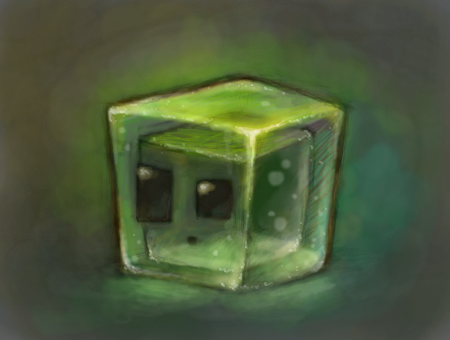

Обо мне

Hello World!
Здравствуйте, меня зовут Пляшник Андрей, и это мой первый сайт. Я проживаю в городе Челябинске и обучаюсь в Южно-Уральском Технологическом Университете на первом курсе. Могу рассказать немного о себе. Вообще я уже 3-ий раз обучаюсь на первом курсе, всё из-за коронавируса и моей лени. После сдачи экзаменов в 11-ом классе, я поступил в Московский Энергетический институт, к сожалению на платную форму обучения. История почему это произошло тоже забавная, если это можно так назвать, была специальность, на которую я проходил на бюджет с большим отрывом по баллам. И даже на общежитие мне хватало баллов. Но приёмная коммисия МЭИ решила продлить приём на час, а потом и ещё на час. И в итоге все, кто не поступили на другие специальности и в другие ВУЗы, стали посылать свои документы по моей специальности, и а итоге я оказался на нижней границе поступающих, и не поступил... После этого, посовещавшись с семьёй, мы решили, что потянем платку в МЭИ хотя бы годик, и я постараюсь перевестись на бюджет за этот год. Я прилетел в Москву, жил у сестры, и учился как мог, мне очень нравилось там, я записался в профком, записался на секцию танцев, потому что я занимаюсь танцами с детства, и в Москве тоже хотелось продолжать своё хобби. Жизнь была прекрастна, пока не наступила вторая, или третия волна коронавируса. Нас снова перевели на дистант, за место живой доски и живого преподователя, мы снова стали смотреть на пустой экран zoom-а, а точнее webex-а, и в этот же момент, у меня в личной жизни кое-что случилось, и я окончательно сломался. Стал просыпать и прогуливать все пары, т.к. они были дистант, и я всё равно ничего не запоминал, стал пить, и в итоге, когда пришло время экзаменов, я ещё и заболел коронавирусом. Конечно я не сдал, и даже не был допущен. Но из-за ковида, и с помощью уговоров, я смог уйти в академ, чтоб начать всё сначало в следующем году, без ковида.
Оставшееся время до сентября я провёл работая в кофейне, чтоб заработать на новый семестр. Работать мне там очень нравилось, потому что у меня был очень классный менеджер. Однако всему хорошему приходит конце, и наступил сентябрь... Я снова стал ходить на пары, но тут я понял, что я всё это уже проходил, и мне неожиданно стало лень ходить на пары, потому что я всё уже это делал и проходил... И я снова стал пропускать пары, и нифига не делать, первую сессию кое-как закрыл, меня просто пощадили преподы, которые меня помнили с прошлого года. Во втором семестре я старался вернуться в учебный процесс, но у меня не получалось. И на вторую сессию я вышел с долгами... Лето, я доделываю долги, и хожу на пересдачи всех предметов. Начинается 2-ой курс, я "временно переведённый" пока не пересдам все экзамены. Пересдача осталось столько 1, последняя. И я конечно же проваливаюсь. У меня не получается пересдать все предметы... Хотя парочку я смог кое-как пересдать на 3, но не смог все... И я подлежу к отчислению... Я паникую, начинаю резко думать что делать. Оформить перевод в другой ВУЗ мне не дают, потому что я двоешник и меня уже отчисляют, "раньше надо было думать". Мои родители в Челябинске узнают про Южно-Уральский Технологический Университете от знакомых, и мы решаем быстро туда переводиться, потому что уже заканчивается дополнительный набор, и то только на заочку. В итоге меня отчислили из МЭИ и я вернулся обратно в Челябинск, учиться в ЮУТУ
Народная мудрость
Повторение — мать учения!
Но я не послушал...
Но сейчас всё хорошо, я дома, хотя меня и засмеяли знакомые, но пока мне всё нравиться, я почти вернулся в учебный процесс, и пока всё хорошо. Вот и мой первый сайт сделал, жизнь налаживается. Если кто-то прочитал всё это, надеюсь было интерестно послушать историю одно глупого студентика, а теперь можете просмотреть статьи, которые я написал по заданию, если вам интерестно конечно.